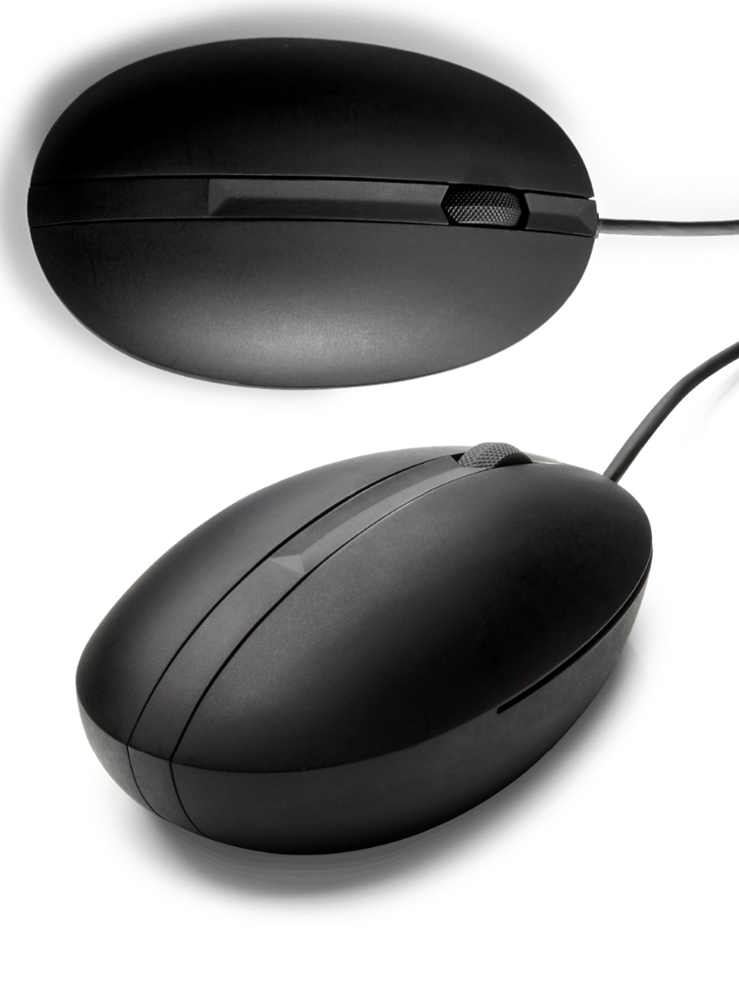
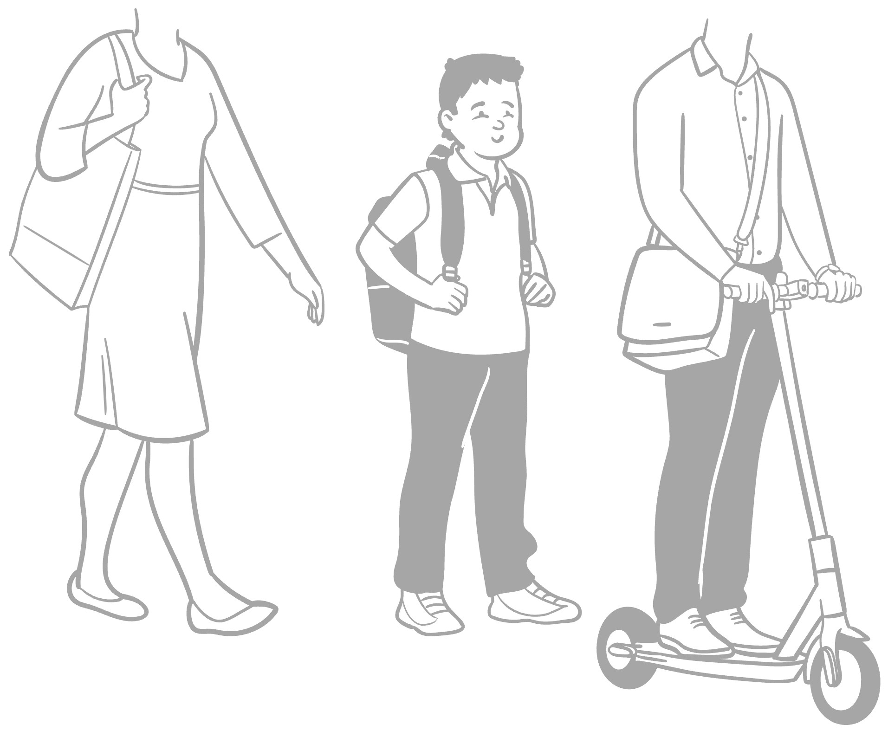
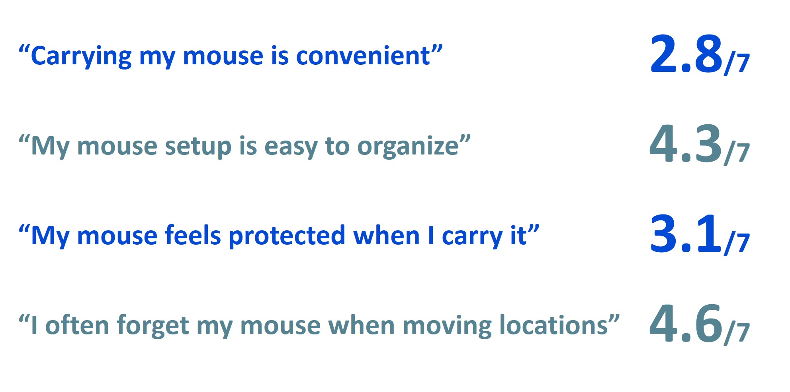
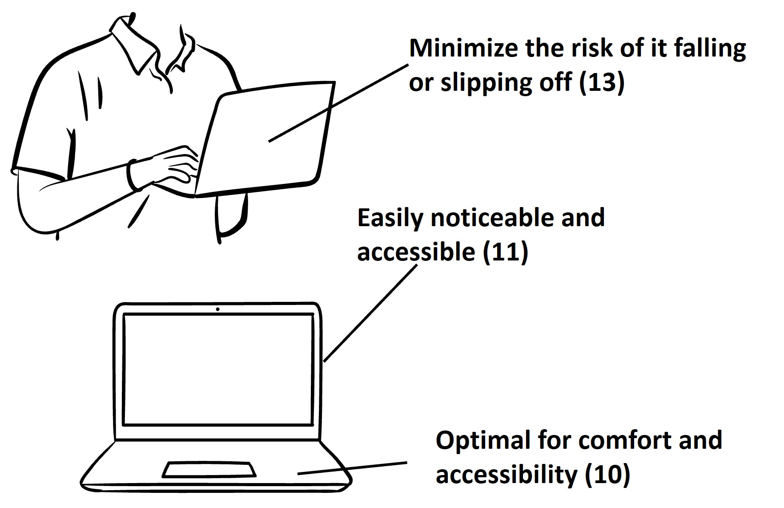
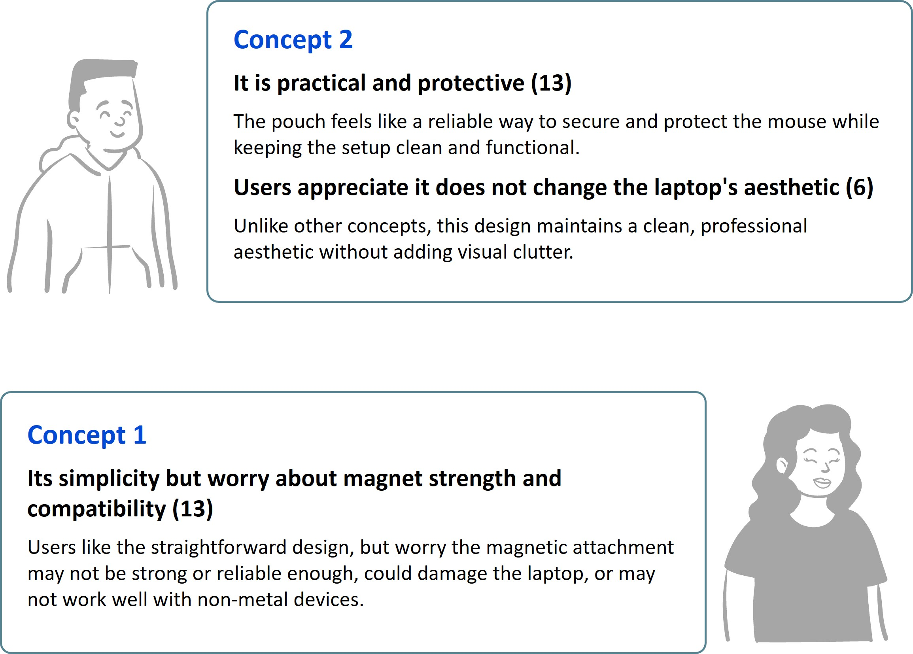
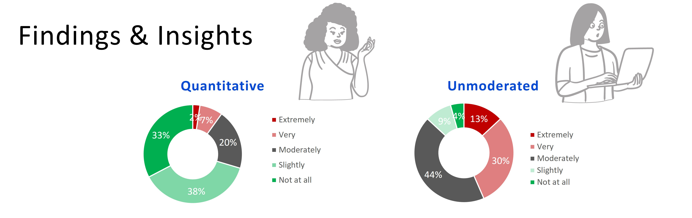
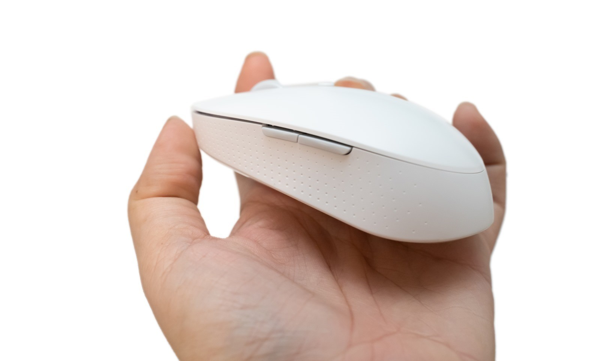

Mouse — Creative Professionals Research
As creative professionals increasingly rely on precision input tools, this project set out to understand what a premium mouse experience truly means to this audience. Over three research phases spanning 2023 to 2026, the study explored the needs, preferences, and pain points of video editors and power users — from core ergonomics and connectivity to portability and product aesthetics — to guide the design of a next-generation mouse.
I led this research end-to-end as the sole UX researcher, designing the study framework, crafting screener surveys, analyzing over 1,000 responses, and synthesizing findings into product-ready recommendations across three iterative research phases.
— Lead UX Researcher
- Screener Survey Design
- Quantitative Research
- User Segmentation
- Concept Testing
- Behavioral Analysis
- Feature Prioritization
- Portability Research
- Actionable Recommendations
Approach

Step 1. Defining the Target Audience
The first step was to clearly define who we were designing for. I identified creative professionals — specifically video editors and power users — as the primary segments most likely to demand a premium mouse experience. I designed screener surveys to qualify participants based on their creative software usage (Adobe Suite, Blender, AutoCAD), weekly hours of creative work, and current mouse behavior. This ensured our survey data was drawn from the most relevant users rather than a generic consumer pool.

Step 2. Large-Scale Survey Research
I designed and deployed a comprehensive online survey on the Respondent platform targeting US-based creative professionals. The survey captured a wide range of behavioral and preference data: mouse grip style, current brand and model usage, connectivity preferences (wired vs. wireless), charging habits, button customization behavior, ergonomic concerns, and willingness to pay for specific features. With 1,037 qualified responses, the data enabled both broad trend analysis and deep segment-level comparison between video editors and power users.

Step 3. Behavioral & Preference Analysis
I analyzed the survey data to surface key behavioral patterns and feature priorities. Notable findings included: 80% of creative professionals care deeply about the aesthetic of their workspace and peripherals; 86% prefer wireless mice for their next purchase; 76% specifically want USB-C charging; and 73% are willing to pay a premium for a rechargeable battery. Top complaints centered on precision and tracking lag, ergonomics, and connectivity instability — pointing to clear opportunity areas for product differentiation.

Step 4. Concept Testing & Iteration
Based on the initial findings, I conducted concept testing studies to validate specific product directions. This included testing a transforming/foldable mouse form factor designed for portability — evaluating reception to the bendable shape, quiet-click mechanism, and compact carry form. I ran multiple iteration cycles to refine the concept, testing willingness to pay for features such as adjustable weight ($5 premium), charging stand ($15 premium), and custom 3D-printed covers ($20 premium), helping the product team set realistic feature tiers.

Step 5. Portability & Mobility Research
A dedicated portability research phase explored the needs of on-the-go mouse users — creative professionals who work across multiple locations. I designed targeted "on-the-go mouse" surveys and analyzed user workflows around packing, traveling, and setting up. Findings informed size, weight, and folding mechanism decisions, ensuring the final product concept met the real-world carry and setup expectations of mobile creative professionals.
Result
1,037
Survey Participants
3
Research Phases
2
Target User Segments

Spanning three research phases — from large-scale behavioral surveys to targeted concept testing and portability studies — this project built a comprehensive understanding of what creative professionals truly need from a precision input device. The findings directly informed the mouse product strategy, from core feature prioritization and ergonomic decisions to pricing structure and go-to-market positioning for the creative professional segment.
Certain details have been omitted to comply with confidentiality agreements. Full research findings and deliverables are available upon request.